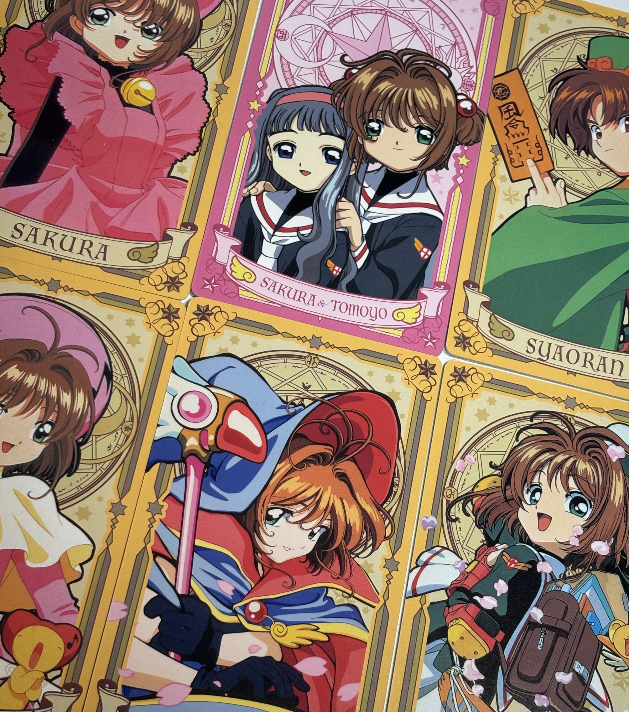
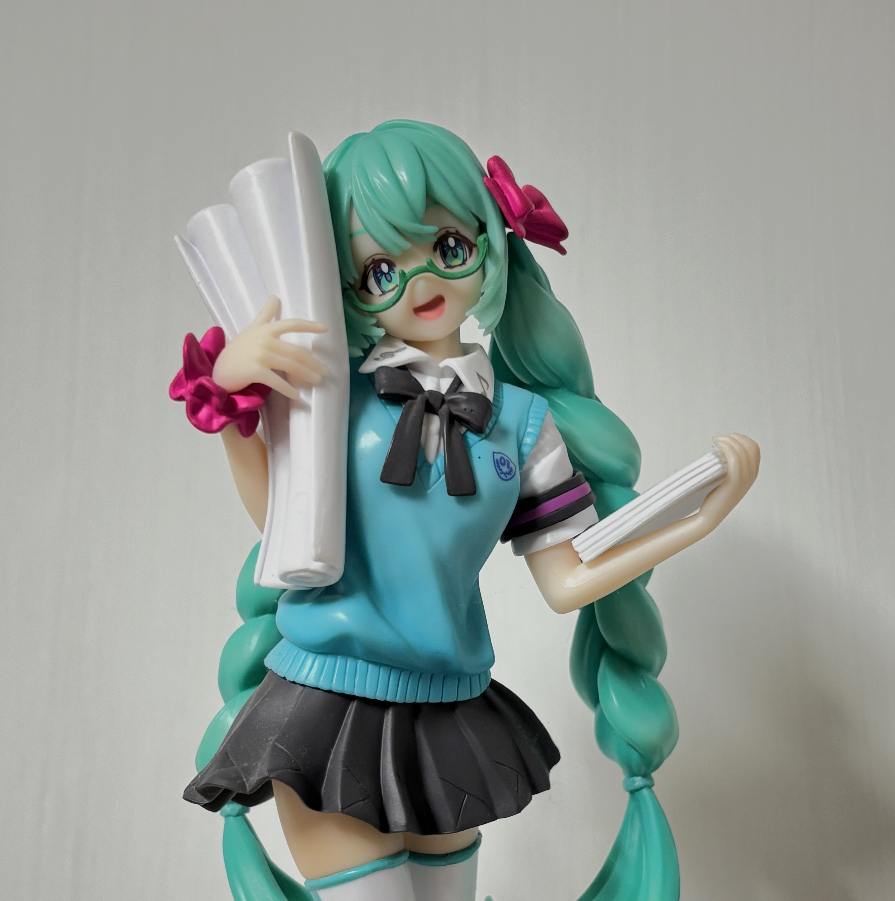
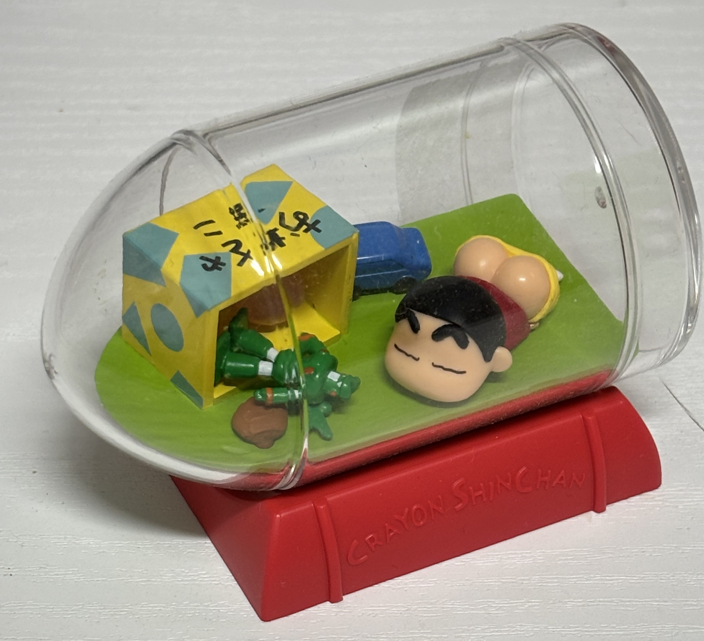
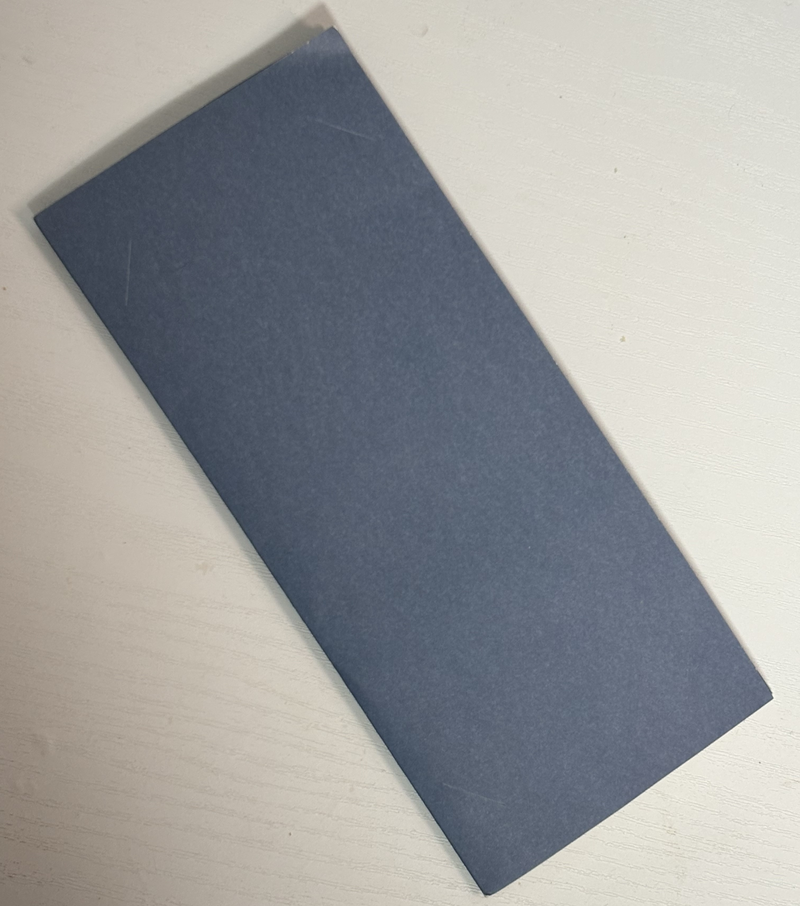

|
< 가챠>제 애장품 1호는 제가 일본과 한국에서 열심히 모은 가챠입니다... 일본 여행을 딱 두 번 밖에 안 가봤지만 두 번 모두 가챠를 하러갔다해도 무방한... 사진에 보이는 것보다 더 많이 가지고 있습니다. 캐릭터 가챠도 귀엽지만, 실제 있는 상품의 미니버젼인 가챠가 상상이상으로 귀여운 것 같습니다. 앗~~~ 또 가고싶다 도쿄! |
< 카드 캡터 체리 클리어카드 >실물이 무지 예쁜데 가격대가 있어서 많이 구매하지 못했습니다.게다가 랜덤이라 신중히 구매해야 합니다. 전 운이 좋게도 고전 그림체인 카드만 뽑았는데, 동생이 제가 정말 갖고싶었던 카드를 뽑아서 곧바로 훔쳤습니다! 카드꽂이에 꽂아두고 매일 한장 씩 돌려가며 전시해둡니다. 실물이 정말 예뻐요! |  |
 |
< 미쿠 피규어 >피규어... 한 번 사니까 또 사고싶은 물건 중 하나입니다. 중고거래를 통해 구했는데, 시세보다 훨씬 높게 주고 사서 좋으면서도 한 편으로 슬퍼지는 것 같습니다... 사이즈도 부담없고 퀄리티도 좋아용~ 피규어 입문은 하츠네미쿠피규어로... |
< 짱구 피규어 >도쿄 라디오 회관에서 구매한 중고 피규어 입니다 한국에서도 몇 번 봤는데 가격대가 12,000원 정도여서 고민만 했는데 단돈 5,000원에 가장 귀여운 녀석이!! 가격보자마자 고민도 안 하고 바로 집었습니다. 완전 만족합니다. |  |
 |
<현금 >요즘엔 현금을 안 써서 현금 생길 일이 없는데 정말 운 좋게 30만원을 받은 적 있습니다. 그 떄를 기점으로 천원짜리라도 지폐가 생기면 모으게 되더라구요. 일종의 비상금? 저금통? 평소엔 책꽂이 속 책들 사이에 꽂아두고 책상에 앉아있다가 생각나면 꺼내 봅니다. 그러면 기분이 정말 좋아져요. 하하하 |